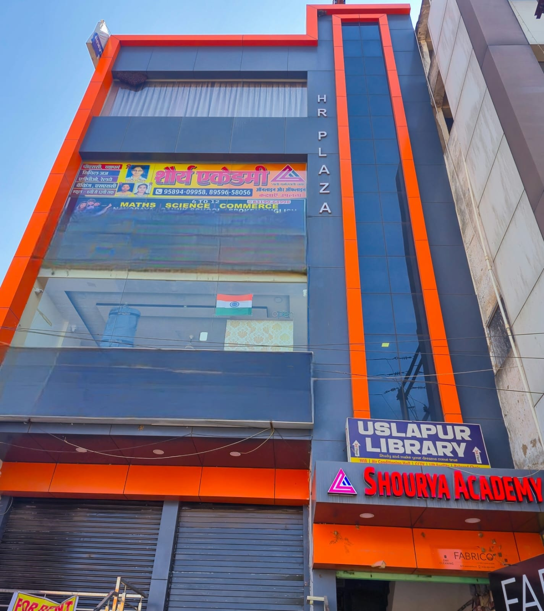

<!-- 3. About Us -->
<section class="py-24 bg-surface-container-lowest relative overflow-hidden" id="about">
    <div class="max-w-7xl mx-auto px-6 grid grid-cols-1 md:grid-cols-2 gap-20 items-center">
        <div class="relative">
            <div
                class="absolute -top-4 -left-4 w-full h-full border-4 border-on-primary-container rounded-xl translate-x-2 translate-y-2">
            </div>
            
        </div>
        <div>
            <h2 class="text-on-primary-container font-headline font-black text-xl mb-4 tracking-widest uppercase">Who We
                Are</h2>
            <div class="mb-8">
                <h3 class="text-4xl md:text-5xl font-headline font-extrabold text-secondary mb-6 leading-tight">
                    Empowering Minds with Academic Integrity</h3>
                <p class="text-3xl text-tertiary font-headline font-bold mb-8 italic"
                    style="font-family: 'Poppins', sans-serif;">“यतो धर्मस्ततो जयः”</p>
                <p class="text-on-surface-variant text-lg leading-relaxed mb-8">Founded in 2017, Shourya Academy has
                    emerged as a lighthouse of knowledge in Bilaspur. We don't just teach syllabus; we architect careers
                    through discipline, passion, and proven pedagogical methods.</p>
            </div>
            <div class="space-y-6">
                <div class="flex items-start gap-4">
                    <div class="bg-secondary-container p-3 rounded-lg">
                        <span class="material-symbols-outlined text-secondary">verified</span>
                    </div>
                    <div>
                        <h4 class="font-headline font-bold text-secondary text-lg">Quality Education</h4>
                        <p class="text-on-surface-variant">Structured curriculum aligned with latest board patterns and
                            competitive exam standards.</p>
                    </div>
                </div>
                <div class="flex items-start gap-4">
                    <div class="bg-tertiary-fixed p-3 rounded-lg">
                        <span class="material-symbols-outlined text-on-tertiary-fixed-variant">trending_up</span>
                    </div>
                    <div>
                        <h4 class="font-headline font-bold text-secondary text-lg">Proven Results</h4>
                        <p class="text-on-surface-variant">Consistent track record of toppers in CG/CBSE Boards and
                            state-level entrance tests.</p>
                    </div>
                </div>
                <div class="flex items-start gap-4">
                    <div class="bg-primary-fixed p-3 rounded-lg">
                        <span class="material-symbols-outlined text-on-primary-fixed-variant">psychology</span>
                    </div>
                    <div>
                        <h4 class="font-headline font-bold text-secondary text-lg">Personality Development</h4>
                        <p class="text-on-surface-variant">Focus on confidence, communication, and ethical values for
                            holistic growth.</p>
                    </div>
                </div>
            </div>
        </div>
    </div>
</section>